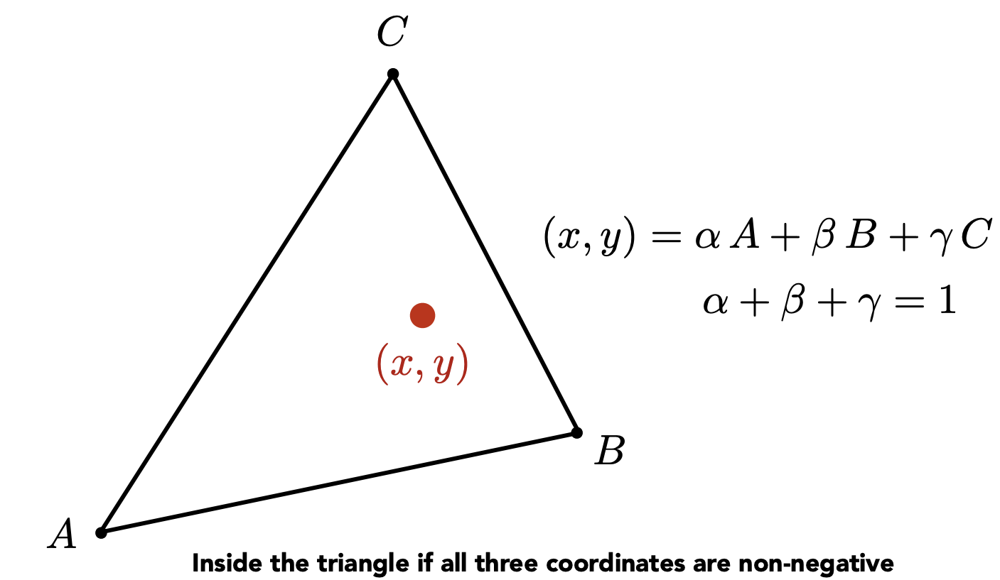

|
In this assignment, we used C++ to build a simple rasterizer that features triangle-drawing, supersampling, hierarchical transforms, and various texture mapping methods. It was incredibly fascinating to explore the various ways that images are rendered, as well as comparing the different sampling/anti-aliasing configurations.
The triangle rasterization process is handled through the use of two functions: rasterize_triangle and insideCheck.
rasterize_triangle
rasterize_triangle first finds the bounding box of the triangle based on the three inputted points.
It does this by finding the smallest \(x,y\) values and largest \(x,y\) values, making sure to use floor
for the lower bound and ceil for the upperbound. This step is important to ensure that even if a
vertex is only partially covered by a pixel, it is still considered when rendering by the bounding box.
rasterize_triangle then uses a nested for loop (over \(i, j\)) to iterate over the entire bounding box, where it
makes calls to inside_check with the pixel's position +0.5 in either direction in order to verify whether each pixel in the bounding box is within the
triangle. This offset is to measure from the middle of the pixel rather than corner. If the pixel is within the triangle, then it is added to the sample buffer. fill_pixel function is called and the \(i,j\) position on the board is filled with that color.
inside_check
bool insideCheck(double x0, double y0, double x1, double y1, double x2,
double y2, double x, double y) {
double line1 = -(x - x0) * (y1 - y0) + (y - y0) * (x1 - x0);
double line2 = -(x - x1) * (y2 - y1) + (y - y1) * (x2 - x1);
double line3 = -(x - x2) * (y0 - y2) + (y - y2) * (x0 - x2);
return (line1 >= 0 && line2 >= 0 && line3 >= 0) ||
(line1 <= 0 && line2 <= 0 && line3 <= 0);
}
inside_check first computes the line equations presented in lecture from the lines formed by \(v_0 \to v_1\), \(v_1 \to v_2\), and \(v_2 \to v_0\).
Since the described process only iterates through every pixel in the bounding box once, it exactly matches the efficency of an alg that only samples each pixel one time. It has efficiency \(O(WH)\) where \(W\) is width and \(H\) is height.
|
|
Using the basic rasterization process described in class without any supersampling, aliasing in the form of gaps in the triangle rendering can be seen. Here, the gap is located on the left corner of the red triangle.
The triangle supersampling process is handled through the use of two functions: a modification to rasterize_triangle and resolve_to_framebuffer.
rasterize_triangle
for (int k = 0; k < sqrt(sample_rate); k++) {
for (int l = 0; l < sqrt(sample_rate); l++) {
double x_point;
double y_point;
// find the proper sampling distance
if (sample_rate > 1) {
x_point = i + (1 + l * 2) * (1 / (sqrt(sample_rate) * 2));
y_point = j + (1 + k * 2) * (1 / (sqrt(sample_rate) * 2));
} else {
// if sample rate = 1
x_point = i + 0.5;
y_point = j + 0.5;
}
if (insideCheck(x0, y0, x1, y1, x2, y2, x_point, y_point)) {
// code for offsetting the buffer pixel input
this->sample_buffer[width * j * sample_rate + i * sample_rate +
k * sqrt(sample_rate) + l] = color;
}
}
}
sqrt(sample_rate) times each to properly supersample at sample_rate; for example, a rate of 16 corresponds to a 4x4 square of samples, or sqrt(sample_rate) * sqrt(sample_rate) grid.
Then, to calcuate where inside the pixel each sample should be taken, the x_point and y_point logic were defined as such. Following the lecture slides, the formula was calculated such that each sample lies at
the center of the subdivided pixel grid. During implementation, x_point and y_point actually had to be changed from floats to doubles to account for rounding errors not rendering smaller triangles.
sample_buffer, the positioning of each pixel had to be offset to insert a
2D position into 1D array. The following logic, then, was used to group all supersamples of each pixel together,
which is diagrammed below. This leads to the required offsets on \(i,j,k,l\) shown in the code above to properly index samples.
|
|
rasterize_triangle, resolve_to_framebuffer also had to be modified in order to properly take the upsampled pixels and the downsample them again with corresponding opacity values. derived_color variable is initialized to have RGB channels all 0, which are then proprotionally added back to as all samples are collected. (Aka, derived color is an average of all sample colors)
Color derivedCol = Color();
for (int off1 = 0; off1 < sqrt(sample_rate); off1++) {
for (int off2 = 0; off2 < sqrt(sample_rate); off2++) {
Color c = this->sample_buffer[width * y * sample_rate + x * sample_rate +
off1 * sqrt(sample_rate) + off2];
derivedCol += 1.0/sample_rate * c;
}
}
rgb_framebuffer_target using the already implemented method.clear_buffers
clear_buffers commands was added into the set_sample_rate and set_framebuffer_target functions in order to make sure the framebuffer was empty everytime it needed to be overwritten with a new render (when more supersamples are taken or window is resized). |
|
|
|
These results are observed because increasing the supersampling rate means the pixel color value better represents the proportion of the pixel covered by the triangle. In general, supersampling allows the render to capture and display more information about the picture than if it was rendered at a lower resolution, even when it is downscaled. At rate 1, the rasterizer only considers if the middle of the pixel is within the triangle. This makes it more likely to discount certain pixels as not being in the triangle at all. Using supersampling, though, more subsamples within the pixel would be categorized as inside the triangle, thus filling the gap seen in the top left image. In general, supersampling helps to reduce aliasing, and increasing the rate would mean each pixel becomes a better characterization of how much of the pixel is contained in the triangle, which is reflected in the opacity of the pixel.
|
|
Barycentric coordinates are a way to represent a point in space in terms of a linear combination of a set of (3) points. In the context of computer graphics, it's essentially taking the colors of a set of coordinates, and blending them together to form a hybrid color at a given coordinate; it's basically color interpolation! In this class, we the barycentric coordinates of a 2D vector \((x, y)\) to be \((\alpha, \beta, \gamma)\), characterized in the figure below from lecture:
|  |
The barycentric coordinates add up to 1 to ensure that the color of the coordinate is representative of something "inside" of the colors of the 3 reference points. Another way to think about this is that we shouldn't be introducing more "color" than what we started with. We provide a visualization of the color blending in the RGB triangle below, in which we observe a smooth, natural blending of colors.
We also display the color wheel in svg/basic/test7.svg below:
|
|
Pixel sampling is the process of determining which texel to sample from based on the barycentric coordinates of the pixel in the image. To implement this, we multiply the barycentric coordinates by the dimensions of the texture image, and then interpolate the result based on the sampling method:
lerp) in the \(u, v\) directions, within texture values corresponding to the bounds of a unit square containing the image pixel. svg/texmap/test1.svg.
We observe that bilinear sampling (right) yields a much smoother and less jaggy texture mapping compared to nearest sampling (left). The performance difference is likely most pronounced in line or edge texturing.
Level sampling is using mipmaps to sample the texture of an image at various "levels" or resolutions. To implement this, we follow the procedure below:
log2 of the max of their norms. L_ZERO, we hardcode the level to be 0; for L_NEAREST, we round the level to the nearest integer; and for L_LINEAR, we sample based on the floor and ceiling of the level, and then linearly interpolate the resulting colors.We now apply various sampling methods on an image of Toji, an anime character. We provide the 6 versions of Toji below:
L_ZERO and P_NEAREST |
L_ZERO and P_LINEAR |
L_NEAREST and P_NEAREST |
L_NEAREST and P_LINEAR |
L_LINEAR and P_NEAREST |
L_LINEAR and P_LINEAR |